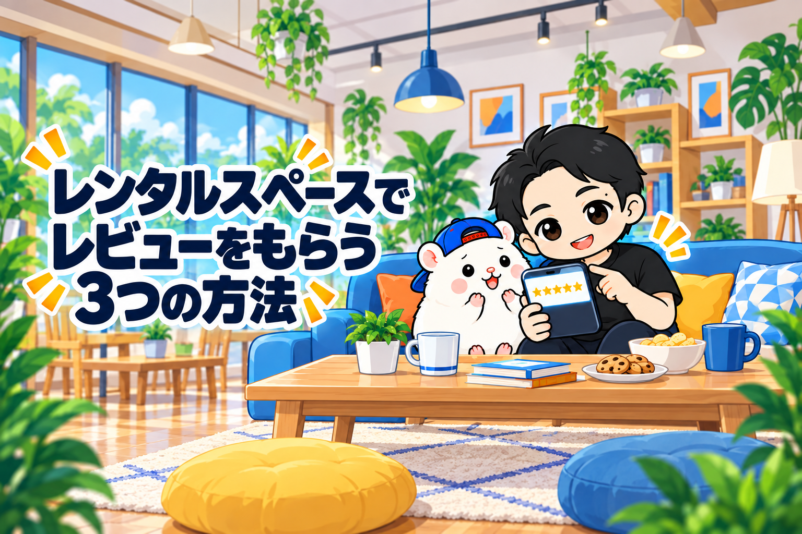
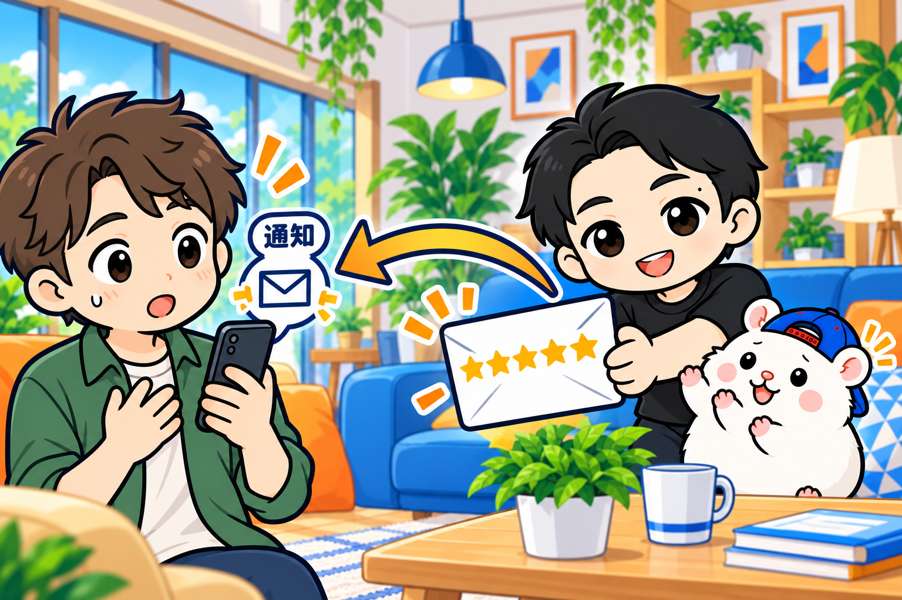
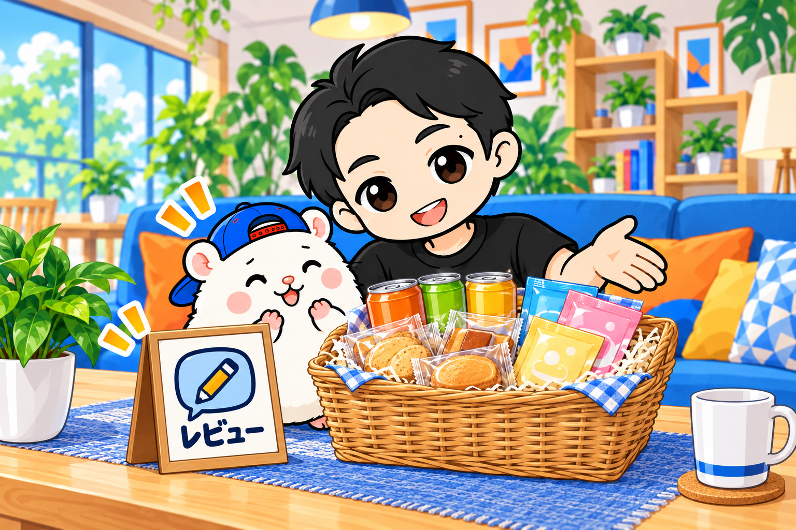
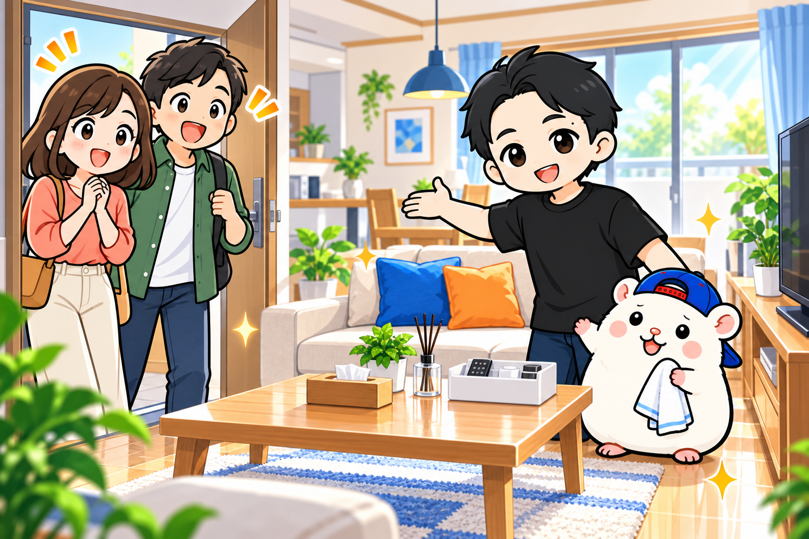
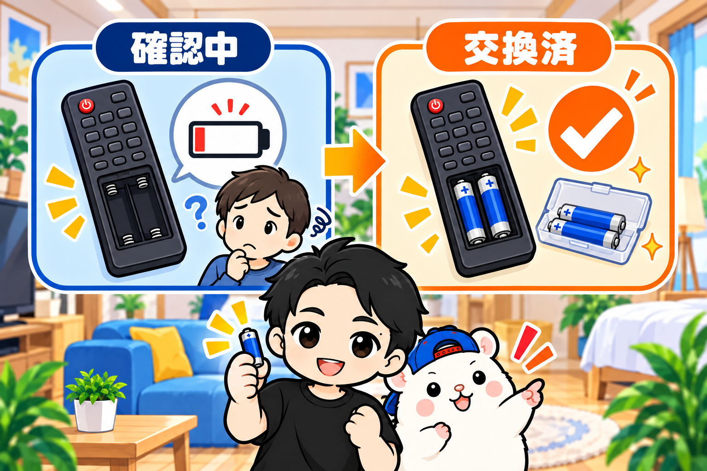

いまは、レビューで比べてから買うのが当たり前です。
レビューが大事なのは、言わずもがなだと思います。
たとえば、Amazonで何かを買うとき。
まず星の数を見ますよね。
「4.3か、4.5か。これはいいんじゃないか」。
コメントも読んで、「この商品、よさそうだな」と思って買う。
レンタルスペースも同じです。
ふだんのダンスの練習や、誕生日のような大事な日。
なるべく失敗しないように、いい場所を予約したい。
だから、レビューは予約の決め手になります。
さらにいまは、インスタベースなどで、AIがレビューを要約して「良い点」「悪い点」を出すようになりました。
星の数だけでなく、レビューに何が書いてあるかも、大事になっています。
では、どうすればレビューをもらいやすくなるのか。
ぼくがやっていることを、3つ話します。
その1: 先にこちらから星5を送り、「星5をつけました」と伝える

ポータルサイトでは、利用後に運営者の側からもお客さんへレビューを送れます。
まず、これを送ります。
「きれいに使っていただき、ありがとうございました。またのご利用をお待ちしています」という感じで、星5のレビューです。
そのあと、追いかけてメッセージを送ります。
昨日はご利用ありがとうございました。
きれいに使っていただいたので、感謝の気持ちを込めて、★5の評価をさせていただきました。
もしよろしければ、当スペースにもレビューをいただけるとうれしいです。
ポイントは、星5をつけたことを、伝えてしまうことです。
ポータルサイトのレビューは、おたがいがレビューし合うか、一定の期間がたつまで、自分への評価を見られません。
「レビューを送りました」だけだと、どんな評価をされたのか分からないんですよね。
だから、「星5を送りました」と伝えます。
そうすると、お客さんは安心します。
メルカリでも、「評価が届きました」と通知が来るじゃないですか。
でも、その時点では、どんな評価かまだ分からない。
ちゃんといい評価をしてくれたかな、とちょっとドキドキする。
自分も相手を評価すると、おたがいの評価が見られて、「よかった、よかった」となる。
あんな感じです。
ここで効いてくるのが、返報性の法則です。
人は何かをしてもらったら、お返しをしないと居心地が悪くなります。
やってみると、レビューをもらえる割合が、かなり高まります。
送るのは、利用の翌日の朝か、午前中でいいと思います。
ぜひやってみてください。
その2: 部屋に「レビューお願いします」の掲示と、ちょっとした景品

部屋の中に、「レビューをお願いします」というPOPや掲示物を貼ります。
それだけでもいいんですけど、ぼくはもう一歩進めます。
「レビューにご協力いただけるなら、こちらの景品を差し上げます」と誘導します。
ぼくが用意しているのは、こんなものです。
・小さい缶のジュース、お茶、コーヒー
・入浴剤(バブのような固形のものや、袋に入った粉のもの)
・小さいパックのお菓子
どれも個包装で、1つ数十円くらい。
費用は、そんなにかけません。
「ご自由にお取りください」ではなく、「レビューにご協力いただける場合、お一人ひとつずつお持ち帰りください」と書きます。
1組ひとつだと、誰がもらうのかという話になってしまうので、ここは気前よく、お一人ひとつずつです。
こうすると、レビューをもらいやすくなります。
しかも、このときのレビューは、とてもいいことが多い。
星5が、本当に中心になります。
それこそ返報性じゃないですけど、わざわざお菓子をもらって星3をつけるのは、考えにくいですよね。
自分が当事者だったら、「お菓子もらったし、星5でレビューしよう」となると思います。
その3: 相手の期待を上回るスペースにする

これはテクニックっぽくないですが、いちばんの基本です。
人がレビューを書きたくなるのは、予約するときに想定していた期待を、はるかに上回ったときだと思います。
逆もしかりで、期待を下回るものを受けたら、悪いレビューを書きたくなります。
感動は、共有したくなるもの。
そして、怒りも発散したくなるものです。
だから、掃除、備品、消耗品。
商品としての部屋のクオリティを、愚直に高めていく。
やっぱり、ここがいちばん大きいと思っています。
番外編: 不本意な悪いレビューを書かれてしまったら
最後に、悪いレビューを書かれてしまったときのことです。
1. まず運営に相談する
あまりにも悪質だったり、うそだったりするレビューは、証明できれば消してくれるかもしれません。
ただ、ポータルサイトは基本的に、レビューを消さない・操作しないという方針です。
相談しても望みは薄いですが、まずはやってみてください。
2. レビューが少ないときは、リスティングをやり直す
オープンして間もないときや、レビューが少ないときの悪いレビューは、死活問題です。
ふつうにやっていればありえないですが、いきなり星1や星2が続いたら、予約は入りません。
そういうときは、改善を待つよりも、レビューがよくなるのを待つよりも、リスティングをやり直してしまったほうがいいと思います。
いまのリスティングを一度やめて、新しいスペースとして出し直すんです。
そのために、一生懸命つくった説明文、タイトル、価格設定は、パッとコピペで出し直せるように、どこかにメモしておいてください。
全部のポータルサイトで悪いレビューがつくことは、あまりないと思います。
開店して間もないなら、やり直すのは1つだけになるはずです。
3. 対策してから、レビューに返信する

たとえば、「リモコンの電池が切れていて、テレビの操作がしにくかった」と書かれたとします。
対策の前に返信すると、こうなると思います。
この度はご利用いただき、ありがとうございました。
リモコンの件、ご不便をおかけして申し訳ございません。
確認をして、すぐに対応いたします。
このやり取りは、ポータルサイト上で、次のお客さんも見ています。
比べている人からすると、「このスペース、リモコンの電池が切れたりするんだ。マジか」。
「対応しますって書いてあるけど、本当に対応したのかな。大丈夫かな」。
ちょっとハテナがつきますよね。
だから、ちゃんと電池を替えてから、返信します。
ご不便をおかけして申し訳ありません。
リモコンの電池は、すぐに確認して交換いたしました。
今後万が一のことがないように、予備の電池も〇〇に設置いたしました。
この度はご指摘いただき、ありがとうございます。
対策しました、ということを、そこに書くんです。
そうすれば、次のお客さんは「もう大丈夫なんだ」と思えます。
しかも、「すぐに対応してくれる、ちゃんとしたスペースだな」と伝わる。
悪いレビューが、逆に信頼につながります。
まとめ: 送る、渡す、上回る
先に星5を送って、伝える。
部屋で、小さな景品を渡す。
そして、期待を上回る。
悪いレビューには、対策してから返信する。
まずは明日、利用してくれたお客さんに、レビューとメッセージを送ってみてください。
▼もう1つの副業、AI社員だけのeBay輸出店の実録🐹
https://note.com/cham_ebay
▼ブログ(レンスペ×eBay、全記事まとめ)
https://rental-space.net
レンタルスペースの数字とやり方は、教科書にぜんぶ書いています。
レンタルスペース経営の教科書(公式サイト最安 ¥17,800)
https://rental-space.net/kyokasho/
※発売記念価格です。3部売れるごとに2,000円ずつ値上げします。